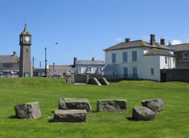
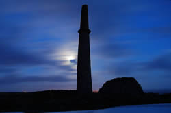

St. Just - The Mining Capital of Penwith
St Just (Cornish: Lanust) is a town and civil parish 8 miles west of Penzance. The parish encompasses the town of St Just and the nearby as well as Pendeen and Kelynack. It is the most westerly town in England. The parish consists of 7,622 acres of land, 12 acres of water and 117 acres of foreshore. St Just is one of the most ancient mining districts in Cornwall and remains of ancient pre-industrial and more modern mining activity have had considerable impact on nearby landscape. Some sources state that the name St Just derives its name from Justus or Saint Just, who was sent to England by Pope Gregory in A.D. 596, with Saint Augustine to convert the Saxons. St Just has a population of approx 4500 and houses local amenities. Nearby is Cape Cornwall, which was once believed to be the most westerly point of the Duchy and in the Union. Within the Parish of St Just but not part of the town are Pendeen and Trewellard.
St Just has a healthy artistic scene including Kurt Jackson. St Just is home to the popular Lafrowda festival a 7 day community and arts celebration. A more ancient celebration associated with the town is St Just feast which is held in November every year to celebrate the dedication of the parish church. The feast itself is a 2 day event with a church service and civic procession being held on the Sunday of the feast and a larger scale popular celebration being held on the Monday (which includes a meeting of the local hunt).
St Just is also home to a 'Plain an Gwarry' (Cornish - playing place). These sites were open air performance areas used for historically for entertainment and instruction. St Just's Plain an Gwarry occasionally hosts productions of the Cornish Ordinalia mystery plays.
St. Just & Mining
The ancient settlement has a strong mining history and was during the 19th Century one of the most important mining districts in Cornwall both for Copper and Tin. Mines within the area included Boscaswell Downs, Balleswidden, Parkenoweth, Boscan, Wheal Owls, Wheal Boys, Levant, Botallack and Geevor (which closed in 1990) . Geevor mine itself is now a tourist attraction which allows visitors to explore Cornish Mining heritage. The boom in 19th century mining saw a dramatic increase in the population of St Just, the 1861 census records the population figure as being 9290, however like other areas in Cornwall the population declined with the collapse in the tin trade in the 20th Century and was further aggravated by the decision of the Great Western Railway to abandon its plans to make St Just the terminus of the London mainline to Cornwall. It was announced in July 2006 that the St Just mining district and the rest of the historic mining areas of Cornwall had become the Cornwall and West Devon Mining Landscape World Heritage Site.
images - Phil Williams, Wusel007 | sections of text - en.wikipedia.org